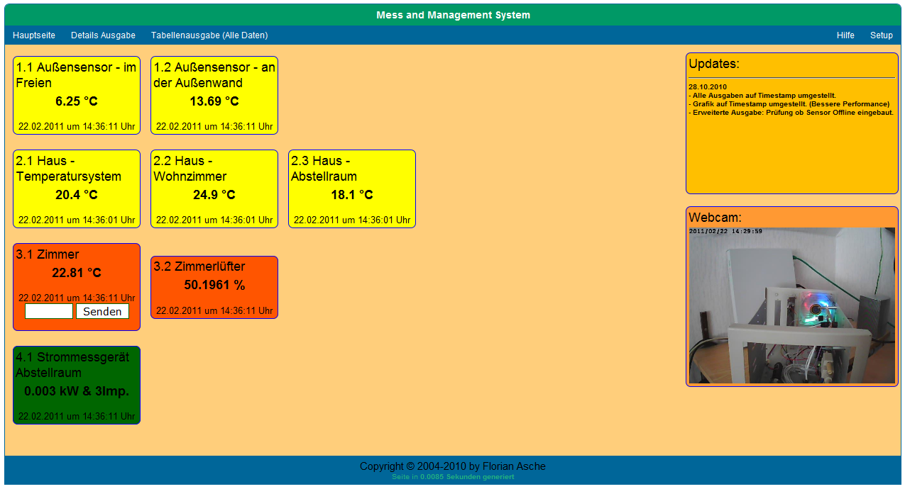
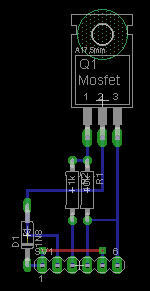
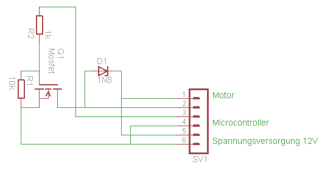

Schulprojekt - Danke Oma - Serverschrank Lüftersteuerung
Projektbeschreibung:
In diesem Projekt geht es darum, die Temperatur in einem Serverschrank mit der Hilfe eines Atmega Microcontroller zu messen, und in einer MySQL Datenbank zu speichern. Über eine Webseite im Internet werden diese Daten dann zur Verfügung gestellt. Als Sensoren wurden zwei DS18B20 Thermosensoren benutzt, welche per 1Wire Bussystem an den Microcontroller angebunden wurden.
Über die Webseite ist die Möglichkeit gegeben, die Drehzahl des in dem Server verbauten Lüfters zu steuern. Die Steuerung des Lüfters wurde mittels des Pulsweitenmodulation (PWM) Signals gelöst. Damit der 5V Microcontroller den 12V Lüfter steuern konnte, wurde ein Mosfet eingesetzt.
Der Microcontroller wurde mit einer in Bascom geschriebenen Software programmiert und an einen Com-Server angeschlossen, welcher die Serielle RS232 Schnittstelle per Telnet zur Verfügung stellt.
Auf dem Microcontroller sollte für den Fall, das die Steuerung des Lüfters über die Webseite versagt, ein Backup/Emergency System eingebaut werden, was ab einer Temperatur von 25 Grad Celsius den Lüfter zu 100% Drehgeschwindigkeit drehen lässt.
Das ganze System wurde in das vorhandene MaMS (Mess and Management System) integriert.Die Temperatur und die konfigurierte PWM Geschwindigkeit wird in der Datenbank gespeichert und auf der Webseite wieder ausgegeben.
Die Daten werden über Telnet mittels eines PHP Scripts auf dem Microcontroller abgerufen und in die Datenbank gespeichert. Diese Programme laufen als Hintergrundprozess auf einem Linux Server.
Die PWM Steuerung wurde über ein einfaches Eingabefeld auf der Startseite in das System eingebunden. Dort wird die Drehgeschwindigkeit in Prozent eingegeben. Die Daten werden von dem Formular verarbeitet und an den Microcontroller gesendet.
Der Microcontroller reagiert auf das RS232 Signal, unterbricht das laufende Programm (Interrupt) und sendet die Daten auf die Schnittstelle.
Screenshot der Webseite:

Platinenlayout für PWM:
Für die Ansteuerung des Lüfters war ein wenig zusätzliche Hardware erforderlich, da der Microcontroller auf 5V Basis und der Lüfter auf 12V Basis arbeitet. Um das Problem des Spannungsunterschieds zu beheben, wurde ein Mosfet, welcher die Steuerbefehle auf der 5V Seite an die 12V Seite übergibt. Hier das Platinenlayout und der Schaltplan (erstellt mit Eagle):


Anhang:
Hier habe ich noch die Original Dokumentation, welche ich damals in der Schule abgegeben habe: Download.